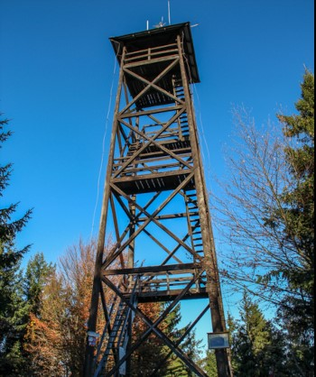
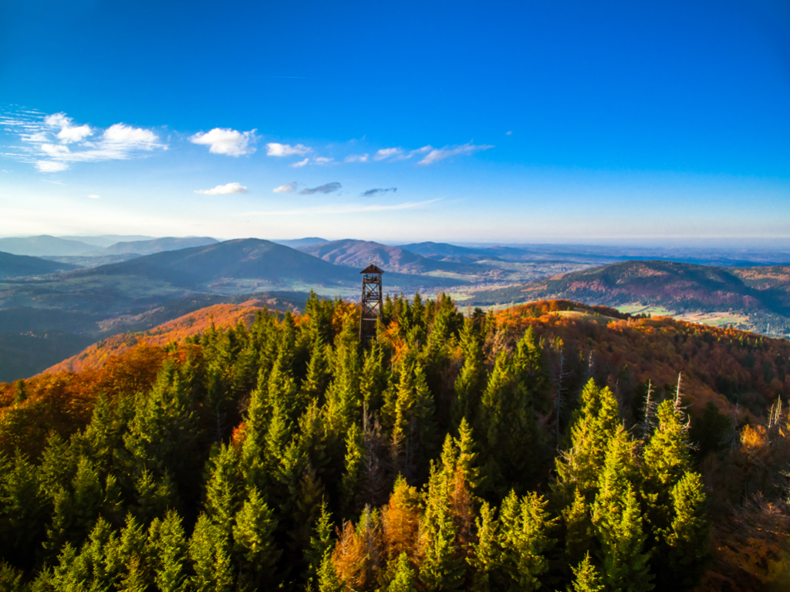
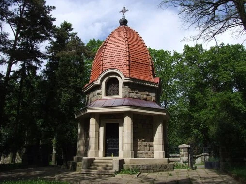
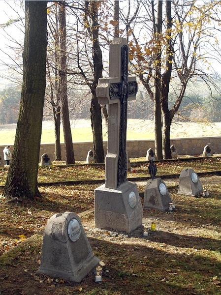
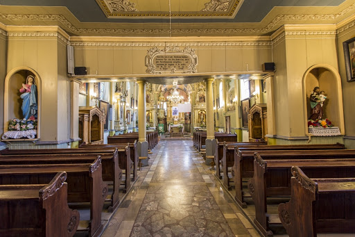
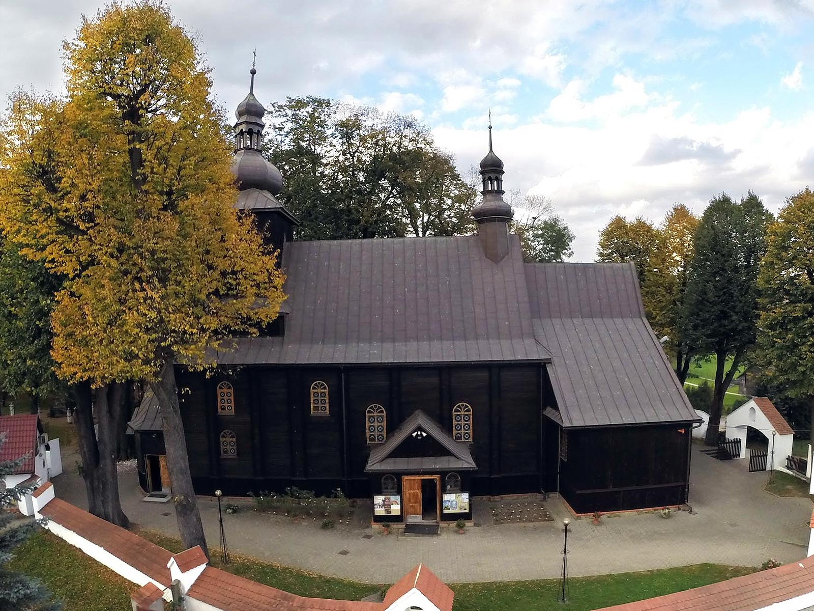

Czy wiesz jakie ciekawe miejsca warto zwiedzić w naszej okolicy?
Jest ich wiele. Godne polecenia są na pewno:
Szczyt Mogielica z wieżą widokową.


Jest to najwyższy szczyt Beskidu wyspowego (1170m n.p.m.) Jego wierzchołek zwany jest Kopą ze względu na charakterystyczny kształt. Z wieży ,
widać szerokie widoki na Beskid Wyspowy. Można także zobaczyć Beskid Sądecki, Pieniny, Gorce i Tatry.
Bazylika Matki Boskiej Bolesnej w Limanowej
.jpg)

Wybudowana została w latach 1910-1918 jako wotum w 100-ną rocznicę Konstytucji 3 maja z inicjatywy ks. Kazimierza Łazarskiego. 3 maja 1991 podniesiona
została przez papieża Jana Pawła II do rangi bazyliki mniejszej. Kościół jest secesyjną trójnawową bazyliką zbudowaną w stylu narodowym. Wyłożona
od zewnątrz kamieniem. Wysoka wieża zakończona jest neobarokowym hełmem. Wewnątrz znajdują się liczne rzeźby, polichromie i witraże. W centralnej
części ołtarza znajduje się rzeźba Matki Boskiej Bolesnej wykonana z drzewa lipowego pochodzącego z XIV wieku. Wokół kościoła rozciąga się rozległy
plac kościelny, gdzie mogą spotkać się licznie przybywający pielgrzymi.
Cmentarz wojenny z I wojny światowej w Limanowa- Jabłoniec.


Jest jednym z ciekawszych cmentarzy wojennych w całej Galicji Zachodniej. Pochowani zostali tutaj żołnierze armii austro-węgierskiej,
którzy zginęli w dniach 7-12 grudnia 1914 w bitwie pod Limanową. Bitwa zakończyła się zwycięstwem wojsk austro-węgierskich i była bardzo ważna,
gdyż zatrzymała napór wojsk rosyjskich na front zachodni. Walkami dowodził Othmar Mohr, który poległ w tej bitwie
Kościół Wszystkich Świętych w Łososinie Górnej.


To zabytkowa drewniana świątynia rzymskokatolicka z XVIII wieku. Wybudowany w 1778 roku i od tego czasu wielokrotnie przebudowywany.
Wewnątrz znajduje się ołtarz główny barkowy z 1873 roku. Centralnym jego punktem jest obraz Matki Bożej z Dzieciątkiem, zasłaniany po
obrazem Wszyscy Święci adorujący Trójcę Świętą. Dalej można zobaczyć cztery ołtarze boczne w stylu rokokowym. Najstarszymi i najcenniejszymi
elementami kościoła są pochodzące z 1535 roku chrzcielnica i kropielnica. Wykonane zostały one w stylu gotyckim.
Na wieży kościoła znajduje się dzwon „św. Andrzej”, odlany 1520 roku. Dziś już jednak nie używany.